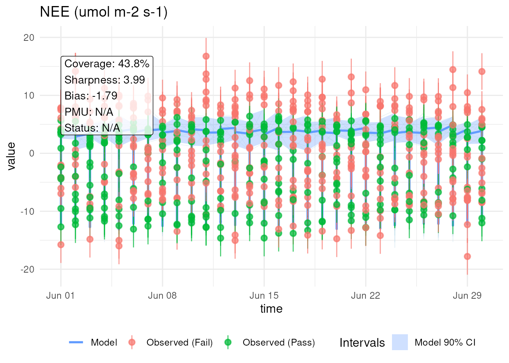
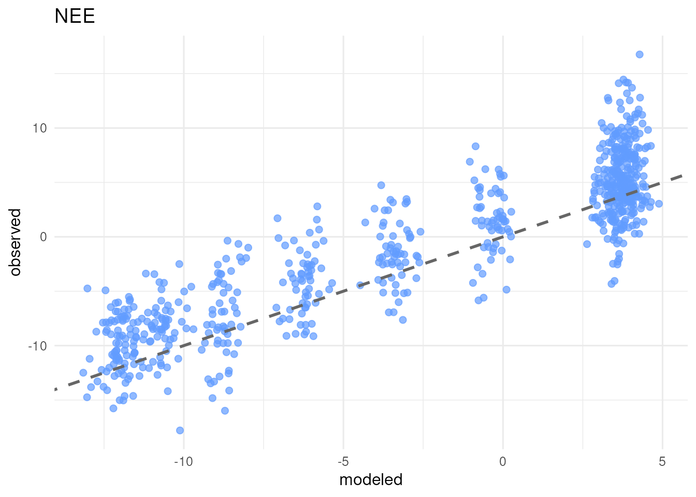
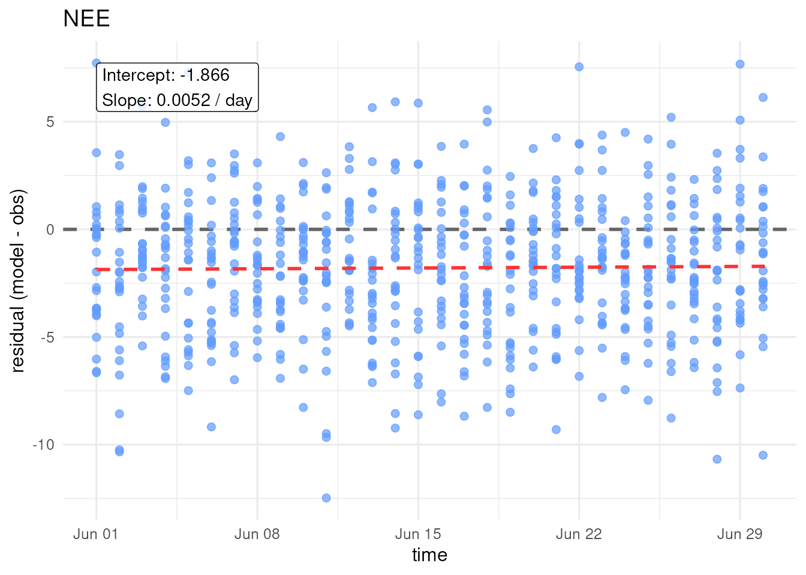

PEcAn Benchmarking and Validation Framework Tutorial
PEcAn Development Team
2026-09-19
Source:vignettes/validation_framework_tutorial.Rmd
validation_framework_tutorial.RmdIntroduction
The PEcAn.benchmark toolkit provides a modular framework
for aligning, evaluating, and visualizing ecosystem model predictions
against observational benchmark datasets.
This tutorial walks through the complete workflow of the validation framework: 1. Understanding data intake schemas and ensemble representation. 2. Generating simulated observations from a statistical error model with known parameters. 3. Reshaping EFI long model predictions and temporally aligning model and observation data. 4. Computing statistical metrics on both the ensemble mean (point metrics) and the full ensemble spread (probabilistic metrics). 5. Generating diagnostic plots (ribbon/spaghetti, scatter, residual plots) and rendering an automated Quarto validation scorecard. 6. Substituting custom model predictions and observational data.
1. Input Data Schemas and Ensemble Representation
The validation toolkit expects model outputs and observations in standardized formats.
Model Ensemble Output (EFI Long Format)
Model ensemble outputs follow the EFI (Ecological Forecasting Initiative) standard long format:
-
datetime: Timestamp string (e.g."2020-01-01 00:00:00"). -
site_id: Site identifier (e.g."socs_sys1"or"US-Ha1"). -
parameter: Integer index or member ID for each ensemble member (e.g.1, 2, ..., N). -
variable: CF/PEcAn standard variable name (e.g."TotSoilCarb","NEE","GPP"). -
prediction: Model output numeric prediction value.
Observation Dataset
Observational data require at minimum: * date /
time: Timestamp (POSIXct or parseable string). *
obs_mean / obvs: Observational numeric mean
value. * obs_sd / obvs_sd (optional):
Observational standard deviation / measurement error. *
site_id / site (optional): Site identifier
matching the model dataset.
2. Statistical Error Model and Fixture Generation
To evaluate model metrics against known true error parameterizations, simulated observations can be generated using an explicit statistical error model:
Where: * is the simulated observation for variable at time ; * is the ensemble mean prediction; * is the scale factor (standard deviation of the ensemble mean); * is the relative bias parameter (e.g. , representing relative bias of ); * is the relative random error standard deviation (e.g. , representing random noise equal to of variability).
R Simulation Code (Reference)
# Side-note: R snippet used to generate observation fixtures from an error model
set.seed(3)
output_scale <- stats::sd(ensemble_mean)
relative_bias <- 0.3 # 30% relative bias
relative_error <- 0.5 # 50% relative error noise
simulated_observation <- ensemble_mean +
output_scale * (
relative_bias +
stats::rnorm(length(ensemble_mean), mean = 0, sd = relative_error)
)In PEcAn.benchmark, precomputed text fixtures are
provided in package extdata: 1.
simulated_observations.csv and
simulated_model_ensemble.csv: Synthetic dataset generated
from the statistical error model with known parameters
(,
).
2. small_salinas_ensemble.csv and
small_salinas_obs.csv: Real-world Salinas SOC ensemble
benchmark dataset.
3. Data Intake, Reshaping, and Alignment
We load the package and read the synthetic simulation fixtures with known error parameters:
library(PEcAn.benchmark)
# Path to built-in simulation fixtures
extdata_dir <- system.file("extdata", package = "PEcAn.benchmark")
if (extdata_dir == "" || !file.exists(file.path(extdata_dir, "simulated_model_ensemble.csv"))) {
extdata_dir <- file.path(getwd(), "../inst/extdata")
}
model_csv <- file.path(extdata_dir, "simulated_model_ensemble.csv")
obs_csv <- file.path(extdata_dir, "simulated_observations.csv")
raw_model <- read.csv(model_csv)
raw_obs <- read.csv(obs_csv)
head(raw_model[, c("time", "ensemble_mean", "ensemble_sd", "model_1", "model_2")])
#> time ensemble_mean ensemble_sd model_1 model_2
#> 1 2026-06-01 00:00:00 3.2490 0.7795 2.8794 2.2931
#> 2 2026-06-01 01:00:00 3.8543 0.9295 3.5410 4.7084
#> 3 2026-06-01 02:00:00 3.6876 1.7591 1.8479 2.3677
#> 4 2026-06-01 03:00:00 3.2847 1.5357 3.4654 3.5382
#> 5 2026-06-01 04:00:00 3.7955 1.2709 3.2666 1.4005
#> 6 2026-06-01 05:00:00 3.4005 1.4651 3.3330 0.2243
head(raw_obs[, c("time", "obvs", "obvs_sd", "variable", "unit")])
#> time obvs obvs_sd variable unit
#> 1 2026-06-01 00:00:00 3.2467 3.1562 NEE umol m-2 s-1
#> 2 2026-06-01 01:00:00 7.8695 3.1562 NEE umol m-2 s-1
#> 3 2026-06-01 02:00:00 5.6617 3.1562 NEE umol m-2 s-1
#> 4 2026-06-01 03:00:00 6.1279 3.1562 NEE umol m-2 s-1
#> 5 2026-06-01 04:00:00 7.4698 3.1562 NEE umol m-2 s-1
#> 6 2026-06-01 05:00:00 -4.3276 3.1562 NEE umol m-2 s-1Reshaping Ensemble Data to Matrix (ens_mat)
To retain individual member trajectory information for spaghetti plots and probabilistic metrics (like CRPS), we extract the ensemble matrix:
# Extract ensemble member columns (model_1, ..., model_10) into a (time x member) matrix
ens_cols <- grep("^model_[0-9]+$", colnames(raw_model), value = TRUE)
ens_mat <- as.matrix(raw_model[, ens_cols])
# Model summary dataframe
model_summary <- data.frame(
time = as.POSIXct(raw_model$time, tz = "UTC"),
value = raw_model$ensemble_mean,
model_q05 = raw_model$model_q2.5,
model_q95 = raw_model$model_q97.5,
site = "SiteA"
)
# Observation summary dataframe
obs_summary <- data.frame(
time = as.POSIXct(raw_obs$time, tz = "UTC"),
value = raw_obs$obvs,
obvs_sd = raw_obs$obvs_sd,
site = "SiteA"
)Temporal Alignment (align_by_time)
We align model predictions and observations in time:
# Align model summary and observations by timestamp
aligned_df <- align_by_time(model_summary, obs_summary, tolerance_secs = 1800)
# Match ensemble matrix indices to aligned time points
aligned_indices <- match(aligned_df$time, model_summary$time)
aligned_ens_mat <- ens_mat[aligned_indices, , drop = FALSE]
attr(aligned_df, "ensemble_matrix") <- aligned_ens_mat
head(aligned_df)
#> time model model_q05 model_q95 site obs_time
#> 1 2026-06-01 00:00:00 3.2490 2.3643 4.5833 SiteA 2026-06-01 00:00:00
#> 2 2026-06-01 01:00:00 3.8543 2.1230 4.9647 SiteA 2026-06-01 01:00:00
#> 3 2026-06-01 02:00:00 3.6876 1.9000 7.0937 SiteA 2026-06-01 02:00:00
#> 4 2026-06-01 03:00:00 3.2847 0.6370 5.7662 SiteA 2026-06-01 03:00:00
#> 5 2026-06-01 04:00:00 3.7955 1.7487 5.6315 SiteA 2026-06-01 04:00:00
#> 6 2026-06-01 05:00:00 3.4005 0.5272 5.0489 SiteA 2026-06-01 05:00:00
#> obvs obvs_sd
#> 1 3.2467 3.1562
#> 2 7.8695 3.1562
#> 3 5.6617 3.1562
#> 4 6.1279 3.1562
#> 5 7.4698 3.1562
#> 6 -4.3276 3.15624. Metric Calculations and Interpretation
The framework categorizes evaluation metrics into two groups:
-
Point Metrics on Ensemble Mean: Evaluates
deterministic skill of the ensemble mean vector
.
- BIAS / Mean Bias Error: . Quantifies systematic over- or under-prediction.
- RMSE (Root Mean Squared Error): . Overall magnitude of error.
- MAE (Mean Absolute Error): . L1 norm error distance.
- R2 (Squared Pearson Correlation): Coefficient of determination indicating proportion of variance explained.
-
Spread / Probabilistic Metrics on Full Ensemble:
Evaluates prediction uncertainty and ensemble dispersion.
- COVERAGE (Prediction Interval Coverage): Fraction of observations falling within the 90% ensemble prediction interval .
-
CRPS (Continuous Ranked Probability Score):
Evaluates full predictive probability distribution against observations
using
scoringRules::crps_sample()(or an analytical sample score fallback).
# Compute complete metric suite
metrics_results <- compute_metrics(
aligned_df,
metrics = c("BIAS", "RMSE", "MAE", "R2", "COVERAGE", "CRPS")
)
print(metrics_results)
#> Site BIAS RMSE MAE R2 COVERAGE CRPS
#> 1 SiteA -1.79172 3.612696 2.860899 0.7938417 0.4375 2.339759Comparing Calculated Metrics against Theoretical Expectations
Since the simulated observation fixture was generated with known statistical error parameters and , closed-form theoretical expected values can be derived directly for BIAS, RMSE, MAE, and :
- Output Scale (): , computed dynamically from ensemble mean predictions.
- Expected BIAS: .
- Expected RMSE: .
- Expected MAE: For residual , .
- Expected : Population coefficient of determination between and : .
# Error model parameters used in simulation fixture generator
beta_v <- 0.3 # 30% relative bias
tau_v <- 0.5 # 50% relative error noise
# Output scale S_v = sd(ensemble_mean) computed from model summary
S_v <- sd(model_summary$value)
# Closed-form theoretical expectations
exp_bias <- -beta_v * S_v
exp_rmse <- S_v * sqrt(beta_v^2 + tau_v^2)
mu <- -beta_v * S_v
sigma <- tau_v * S_v
exp_mae <- sigma * sqrt(2 / pi) * exp(-mu^2 / (2 * sigma^2)) + mu * (1 - 2 * pnorm(-mu / sigma))
exp_r2 <- 1 / (1 + tau_v^2)
# Format summary comparison table
theoretical_comparison <- data.frame(
Metric = c("BIAS", "RMSE", "MAE", "R2"),
`Theoretical Expectation` = round(c(exp_bias, exp_rmse, exp_mae, exp_r2), 4),
`Empirical Calculated Metric` = round(as.numeric(metrics_results[1, c("BIAS", "RMSE", "MAE", "R2")]), 4),
check.names = FALSE
)
knitr::kable(
theoretical_comparison,
caption = "Comparison of Closed-Form Theoretical Expectations vs. Empirical Calculated Metrics"
)| Metric | Theoretical Expectation | Empirical Calculated Metric |
|---|---|---|
| BIAS | -1.8937 | -1.7917 |
| RMSE | 3.6807 | 3.6127 |
| MAE | 2.9584 | 2.8609 |
| R2 | 0.8000 | 0.7938 |
Key Takeaways & Interpretation: * BIAS: The theoretical expected bias is . The empirical calculated bias on this fixture (-1.79) closely matches this expectation. The negative sign occurs because is added to observations (), so . * RMSE & MAE: Theoretical expectations (3.68 for RMSE and 2.96 for MAE) align closely with empirical fixture metrics (3.61 and 2.86), confirming consistency across standard error norms. * : The population matches the empirical calculated value (0.79).
5. Visualizations and Automated Reporting
Spaghetti + Ribbon Timeseries Plot
(metric_timeseries_plot)
Renders individual member trajectories (spaghetti) under the prediction ribbon alongside observations and error bars:
p_ts <- metric_timeseries_plot(aligned_df, var = "NEE (umol m-2 s-1)")
print(p_ts)
Diagnostic Scatter Plot (metric_scatter_plot)
Plots observed values against predicted ensemble mean values:
p_sc <- metric_scatter_plot(aligned_df, var = "NEE")
print(p_sc)
Residual Plot (metric_residual_plot)
Plots residuals against time or predicted values:
p_res <- metric_residual_plot(aligned_df, var = "NEE")
print(p_res)
6. Substituting Custom Processed Data & Real-World EFI Example
To evaluate your own custom model predictions and observational
datasets using the PEcAn.benchmark framework:
-
Model Predictions: Format model outputs in standard
EFI long format CSV (containing
datetimeortime,site_id,parameteror ensemble member ID,variable, andpredictionorvalue). -
Observations: Format observations with timestamps
(
timeordate), target values (value,obvs, orobs_mean), and uncertainty metrics (obvs_sd,obs_sd, orobs_se). -
Array Extraction: Use
efi_long_to_array(raw_model, var = "<variable>", site = "<site_id>")to extract the ensemble matrix. -
Alignment & Metric Evaluation: Pass your
reshaped summaries into
align_by_time()and compute point and probabilistic evaluation metrics withcompute_metrics().
Below is a complete walkthrough demonstrating this workflow on a
real-world dataset in EFI long format
(small_salinas_ensemble.csv and
small_salinas_obs.csv):
salinas_model <- read.csv(file.path(extdata_dir, "small_salinas_ensemble.csv"))
salinas_obs <- read.csv(file.path(extdata_dir, "small_salinas_obs.csv"))
# Reshape EFI long format to ensemble matrix for site 'socs_sys1'
sal_mat <- efi_long_to_array(salinas_model, var = "TotSoilCarb", site = "socs_sys1")
sal_model_summary <- data.frame(
time = attr(sal_mat, "time"),
value = rowMeans(sal_mat, na.rm = TRUE),
model_q05 = apply(sal_mat, 1, quantile, probs = 0.05, na.rm = TRUE),
model_q95 = apply(sal_mat, 1, quantile, probs = 0.95, na.rm = TRUE),
site = "socs_sys1"
)
sal_obs_filtered <- salinas_obs[salinas_obs$site_id == "socs_sys1" & salinas_obs$variable == "TotSoilCarb", ]
sal_obs_summary <- data.frame(
time = as.POSIXct(sal_obs_filtered$date, tz = "UTC"),
value = sal_obs_filtered$obs_mean,
obvs_sd = sal_obs_filtered$obs_sd,
site = "socs_sys1"
)
sal_aligned <- align_by_time(sal_model_summary, sal_obs_summary, tolerance_secs = 365 * 86400 / 2)
sal_aligned_indices <- match(sal_aligned$time, sal_model_summary$time)
attr(sal_aligned, "ensemble_matrix") <- sal_mat[sal_aligned_indices, , drop = FALSE]
sal_metrics <- compute_metrics(sal_aligned, metrics = c("BIAS", "RMSE", "MAE", "R2", "COVERAGE", "CRPS"))
print(sal_metrics)
#> Site BIAS RMSE MAE R2 COVERAGE CRPS
#> 1 socs_sys1 0.18915 0.193965 0.18915 1 1 0.210625